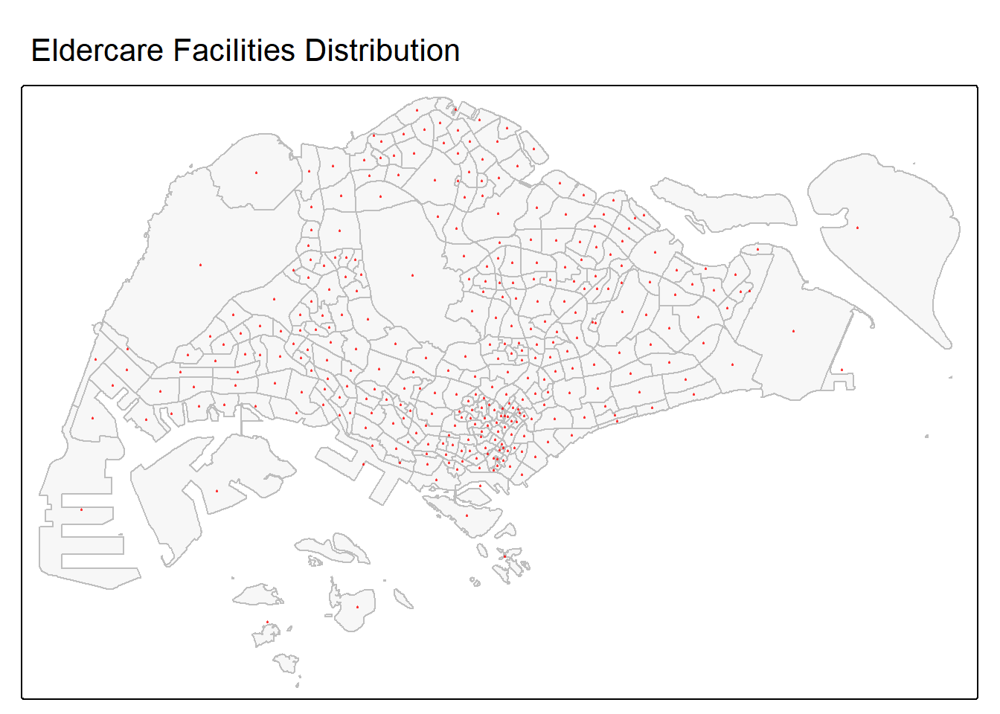
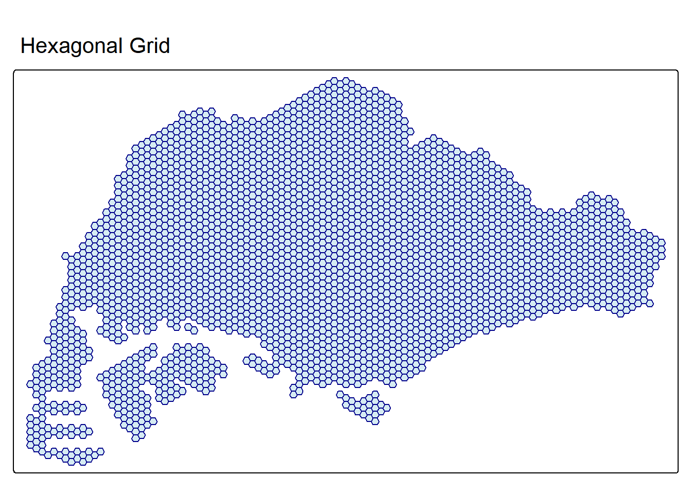
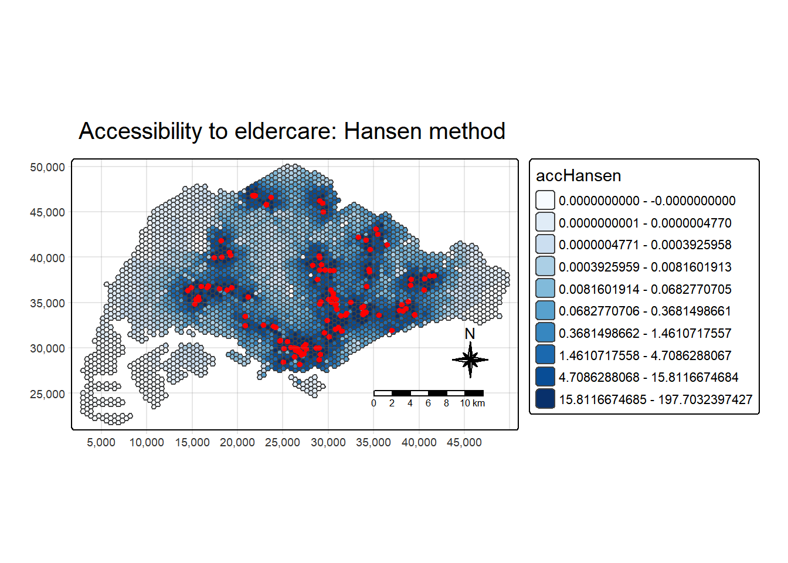
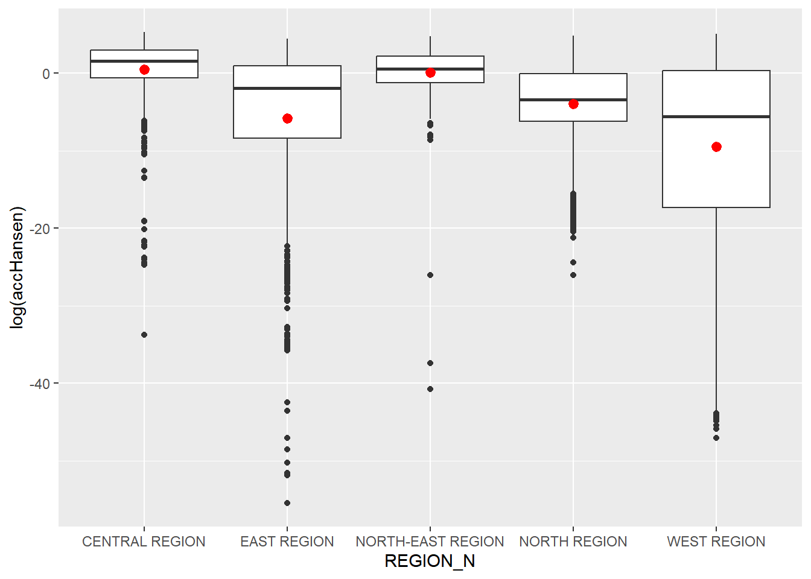
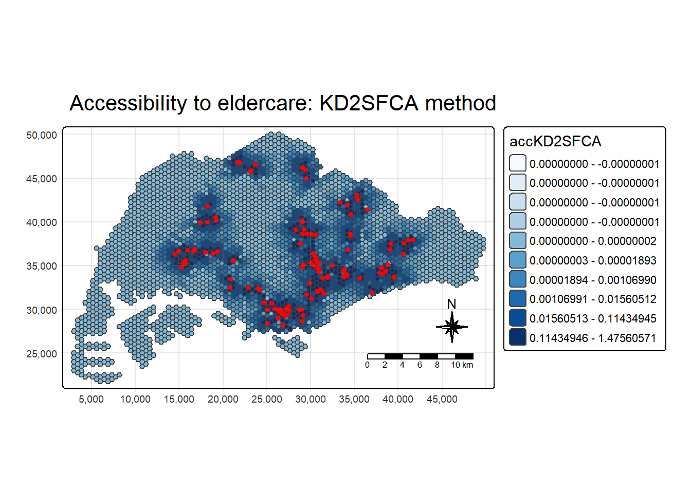
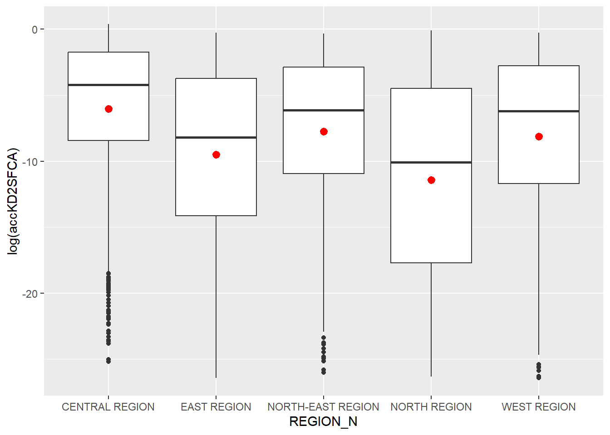
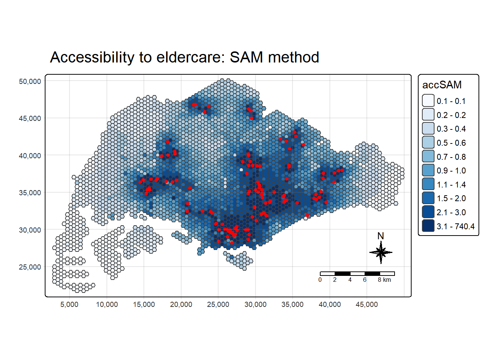
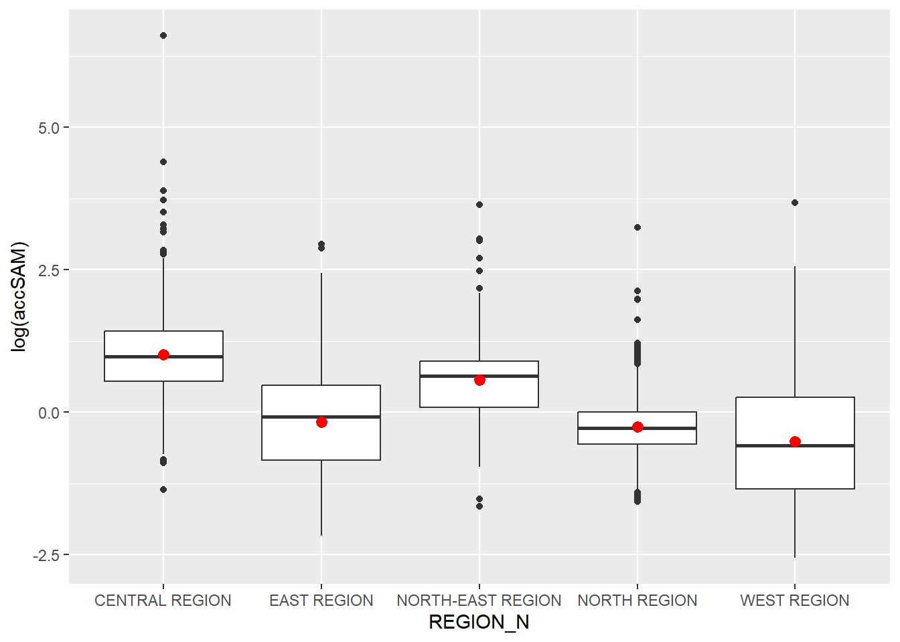

pacman::p_load(tmap, SpatialAcc, sf, ggstatsplot, reshape2, tidyverse)09:Modelling Geographical Accessibility
1 Introduction
Geographical accessibility refers to the ease with which individuals can physically reach certain locations, services, or opportunities, that is generally measured through distance or travel time, with consideration of transportation networks and spatial barriers.
In this exercise, we learn how to model geoprahpical accessibility by using R’s geospatial analysis package.
1.1 Learning Outcome:
- Import GIS polygon data into R and save them as simple feature data frame by using appropriate functions of sf package of R;
- Import aspatial data into R and save them as simple feature data frame by using appropriate functions of sf package of R;
- Computer accessibility measure by using Hansen’s potential model and Spatial Accessibility Measure (SAM); and
- Visualise the accessibility measures by using tmap and ggplot2 packages.
1.2 The Data
| Dataset Name | Description | Format |
|---|---|---|
MP14_SUBZONE_NO_SEA_PL |
URA Master Plan 2014 subzone boundary GIS data, downloaded from data.gov.sg. | ERSI Shapefile |
hexagons |
A 250m radius hexagons GIS data, created by using st_make_grid() of sf package. |
ESRI shapefile |
ELDERCARE |
Locations of eldercare service, downloaded from data.gov.sg. Two formats were available, ESRI shapefile and Google KML. The Shapefile format was selected as it is a geospatial-native format that preserves coordinate systems and spatial attributes more accurately. | ESRI shapefile |
OD_Matrix |
A travel distance matrix between the origin hexagon cells and eldercare service locations, measured by metres. It includes:
|
CSV |
2 Getting Started
There are six packages to be used in this exercise.
| Package | Description |
|---|---|
| sf | Handles importing, managing, and processing vector-based geospatial data |
| tidyverse | A collection of R packages for data wrangling and visualisation, including readr, dplyr, and ggplot2. |
| tmap | Creates cartographic quality static and interactive thematic (choropleth) maps. |
| SpatialACC | Provides a set of spatial accessibility measures from demand to supply |
| ggstatsplot | An extension of {ggplot2} package to create enriched plots for statistical tests |
| reshape2 | Provides tools to restructure and combine data. |
Let’s install and launch these packages into R environment.
3 Geospatial Data Wrangling
3.1 Importing Geospatial Data
The code chunk below uses st_read() of sf package to import the three ERSI Shapefile files into R as sf objects.
mpsz <- st_read(dsn = "data/geospatial", layer = "MP14_SUBZONE_NO_SEA_PL")Reading layer `MP14_SUBZONE_NO_SEA_PL' from data source
`C:\lsrgc\ISSS626-yiqiong-pan\Hands-on_Ex\Hands-on_Ex09\data\geospatial'
using driver `ESRI Shapefile'
Simple feature collection with 323 features and 15 fields
Geometry type: MULTIPOLYGON
Dimension: XY
Bounding box: xmin: 2667.538 ymin: 15748.72 xmax: 56396.44 ymax: 50256.33
Projected CRS: SVY21hexagons <- st_read(dsn = "data/geospatial", layer = "hexagons") Reading layer `hexagons' from data source
`C:\lsrgc\ISSS626-yiqiong-pan\Hands-on_Ex\Hands-on_Ex09\data\geospatial'
using driver `ESRI Shapefile'
Simple feature collection with 3125 features and 6 fields
Geometry type: POLYGON
Dimension: XY
Bounding box: xmin: 2667.538 ymin: 21506.33 xmax: 50010.26 ymax: 50256.33
Projected CRS: SVY21 / Singapore TMeldercare <- st_read(dsn = "data/geospatial", layer = "ELDERCARE") Reading layer `ELDERCARE' from data source
`C:\lsrgc\ISSS626-yiqiong-pan\Hands-on_Ex\Hands-on_Ex09\data\geospatial'
using driver `ESRI Shapefile'
Simple feature collection with 120 features and 19 fields
Geometry type: POINT
Dimension: XY
Bounding box: xmin: 14481.92 ymin: 28218.43 xmax: 41665.14 ymax: 46804.9
Projected CRS: SVY21 / Singapore TMThe import reports reveal the geometry type of each file, and improtant information like dimension and projected CRS. We notice mpsz file does not have proper “SVY21/ Singapore TM”.
3.2 Updating CRS Information
The code chunk below assigns the correct ESPG(3414) to our newly imported sf objects.
mpsz <- st_transform(mpsz, 3414)
eldercare <- st_transform(eldercare, 3414)
hexagons <- st_transform(hexagons, 3414)Then we can verify the update via calling st_crs() of sf package. The EPSG has been updated accordingly.
st_crs(mpsz)Coordinate Reference System:
User input: EPSG:3414
wkt:
PROJCRS["SVY21 / Singapore TM",
BASEGEOGCRS["SVY21",
DATUM["SVY21",
ELLIPSOID["WGS 84",6378137,298.257223563,
LENGTHUNIT["metre",1]]],
PRIMEM["Greenwich",0,
ANGLEUNIT["degree",0.0174532925199433]],
ID["EPSG",4757]],
CONVERSION["Singapore Transverse Mercator",
METHOD["Transverse Mercator",
ID["EPSG",9807]],
PARAMETER["Latitude of natural origin",1.36666666666667,
ANGLEUNIT["degree",0.0174532925199433],
ID["EPSG",8801]],
PARAMETER["Longitude of natural origin",103.833333333333,
ANGLEUNIT["degree",0.0174532925199433],
ID["EPSG",8802]],
PARAMETER["Scale factor at natural origin",1,
SCALEUNIT["unity",1],
ID["EPSG",8805]],
PARAMETER["False easting",28001.642,
LENGTHUNIT["metre",1],
ID["EPSG",8806]],
PARAMETER["False northing",38744.572,
LENGTHUNIT["metre",1],
ID["EPSG",8807]]],
CS[Cartesian,2],
AXIS["northing (N)",north,
ORDER[1],
LENGTHUNIT["metre",1]],
AXIS["easting (E)",east,
ORDER[2],
LENGTHUNIT["metre",1]],
USAGE[
SCOPE["Cadastre, engineering survey, topographic mapping."],
AREA["Singapore - onshore and offshore."],
BBOX[1.13,103.59,1.47,104.07]],
ID["EPSG",3414]]Next we quickly plot two maps for hexagons and eldercare centers in Singapore.
tm_shape(mpsz) +
tm_polygons(alpha = 0.2, border.col = "gray") +
tm_dots(col = "red", size = 0.1, alpha = 0.6) +
tm_title("Eldercare Facilities Distribution")
tm_shape(hexagons) +
tm_polygons(col = "lightblue", alpha = 0.5,
border.col = "darkblue") +
tm_title("Hexagonal Grid")
3.3 Cleaning and Updating Attribute fields of the Geospatial Data
After inspecting the origin and destination datasets, we reorganise the attributes and retain only the required ID fields. We then create a demand field for the hexagon layer, representing the estimated number of people who require eldercare services within each hexagonal area. Likewise, we add a capacity field for the eldercare layer, which indicates the service capacity or supply at each facility (e.g., number of beds or service slots available).
For the purpose of this exercise, both demand and capacity are assigned a constant value of 100 to simplify the demonstration. In practice, actual population data and real facility capacity figures should be used.
eldercare <- eldercare %>%
select(fid, ADDRESSPOS) %>%
mutate(capacity = 100)hexagons <- hexagons %>%
select(fid) %>%
mutate(demand = 100)4 Apsaital Data Handling and Wrangling
4.1 Importing Distance Matrix
The code chunk below uses read_cvs() of readr package to import the matrix dataset into R as a tibble data.frame .
ODMatrix <- read_csv("data/aspatial/OD_Matrix.csv", skip = 0)4.2 Tidying Distance Matrix
The imported ODMatrix is structured that the cost component appears as a separate column.
| origin_id | destination_id | entry_cost | network_cost | exit_cost | total_cost |
|---|---|---|---|---|---|
| 1 | 1 | 667.9336 | 19846.87 | 47.64874 | 20562.45 |
| 1 | 2 | 667.9336 | 45026.76 | 31.87162 | 45726.57 |
| 1 | 3 | 667.9336 | 17644.17 | 173.47882 | 18485.58 |
| 1 | 4 | 667.9336 | 36009.56 | 92.19676 | 36769.69 |
| 1 | 5 | 667.9336 | 31068.09 | 64.62840 | 31800.65 |
| 1 | 6 | 667.9336 | 31194.54 | 117.15249 | 31979.63 |
| 1 | 8 | 667.9336 | 32474.75 | 55.10771 | 33197.79 |
| 1 | 9 | 667.9336 | 22266.53 | 28.38673 | 22962.85 |
| 1 | 10 | 667.9336 | 45219.94 | 55.13242 | 45943.00 |
| 1 | 11 | 667.9336 | 34897.98 | 27.47681 | 35593.39 |
A standardised matrix format stores origins as rows and destinations as columns, allowing the distance between any origin–destination pair to be retrieved by referencing the corresponding row and column indices.
This transformation can be performed using the spread() or pivot_wider() function from the tidyr package to convert the long (thin) table format into a wide (fat) matrix format.
distmat <- ODMatrix %>%
select(origin_id, destination_id, total_cost) %>%
pivot_wider(names_from = destination_id, values_from = total_cost) %>% #spread(destination, total_cost)
select(-'origin_id') #remove the column origin_idNext, we rescale the distance values from metres to kilometres. as.matrix() is used here to convert the tbl_df data frame into a numeric matrix format.
distmat_km <- as.matrix(distmat/1000)5 ac() in the SpatialAcc Package
ac() computes spatial accessibility of demand locations (e.g., residential areas) to service locations (e.g., eldercare centres). It implements several well-known measures:
“Hansen”:Hansen gravity-type accessibility
“KD2SFCA”: Kernel/Downgraded 2SFCA (distance-decay)
“SAM”: Spatial Accessibility Measure
Usage:
- ac(p, n, D, d0, power=2, family=“SAM”)
Arguments:
p: numeric vector of demand at each origin (e.g., number of senior residents per hexagon).
n: numeric vector of supply at each destination (e.g., number of beds per eldercare centre).
D: distance or time matrix separating origins (rows) from destinations (columns). Prefer road-network distance or travel time.
d0: catchment threshold (distance/time) defining which OD pairs “count”.
power: distance-decay exponent (commonly 2 in gravity models).
family: which accessibility method to compute: “SAM”, “2SFCA”, “KD2SFCA”, or “Hansen” (default “SAM”).
All four methods are gravity-based accessibility measures where accessibility improves with greater service capacity and proximity, and decreases with distance and population demand due to competition for limited resources.
Return value
A numeric vector of accessibility scores for each origin (length = length(p)).
6 Modelling and Visualising Accessibility using Hansen Method
The code chunk below uses ac() to compute the Hansen’s accessibility and saves the output in a data frame by using data.frame().
acc_Hansen <- data.frame(ac(hexagons$demand,
eldercare$capacity,
distmat_km,
power = 2,
family = "Hansen"))Let’s have a quick review on the Hansen accessibility measure, after rename the column name to accHansen.
colnames(acc_Hansen) <- "accHansen" We convert the data table into tibble format by using the code chunk below.
acc_Hansen <- acc_Hansen %>%
as_tibble()| accHansen |
|---|
| 0 |
| 0 |
| 0 |
| 0 |
| 0 |
| 0 |
| 0 |
| 0 |
| 0 |
| 0 |
Lastly, we join the acc_Hansen tibble with the hexagon sf data frame using bind_cols(). Because the sf object is on the left side of the operation, the resulting dataset automatically inherits the sf class, preserving its spatial attributes.
hexagon_Hansen <- bind_cols(hexagons, acc_Hansen)| fid | demand | accHansen | geometry |
|---|---|---|---|
| 1 | 100 | 0 | POLYGON ((2667.538 27506.33… |
| 2 | 100 | 0 | POLYGON ((2667.538 25006.33… |
| 3 | 100 | 0 | POLYGON ((2667.538 24506.33… |
| 4 | 100 | 0 | POLYGON ((2667.538 24006.33… |
| 5 | 100 | 0 | POLYGON ((2667.538 23506.33… |
| 6 | 100 | 0 | POLYGON ((2667.538 23006.33… |
| 7 | 100 | 0 | POLYGON ((3100.551 28756.33… |
| 8 | 100 | 0 | POLYGON ((3100.551 28256.33… |
| 9 | 100 | 0 | POLYGON ((3100.551 27756.33… |
| 10 | 100 | 0 | POLYGON ((3100.551 27256.33… |
6.1 Visualising Hansen’s Accessibility
6.1.1 Extracting Map Extend
First, we extract the extent of the hexagon sf layer using st_bbox() of sf package.
mapex <- st_bbox(hexagons)Next, we create a choropleth map with the tmap package to visualise eldercare service accessibility across Singapore.
tm_shape(hexagon_Hansen,
bbox = mapex) +
tm_polygons(fill = "accHansen",
fill.scale = tm_scale_intervals(
style = "quantile",
n = 10,
values = "brewer.blues")) +
tm_shape(eldercare) +
tm_dots(size = 0.3,
fill = "red",
col = "black") +
tm_title("Accessibility to eldercare: Hansen method") +
tm_layout(frame = TRUE) +
tm_compass(type="8star", size = 2) +
tm_scalebar() +
tm_grid(alpha = 0.2)
The map indicates that accessibility is highest in areas with clusters of eldercare centres, particularly in the Central Region and established heartland estates. In contrast, large peripheral areas exhibit zero accessibility.
6.2 Statistical Graphic Visualisation
Next, we create a choropleth map with the tmap package to visualise eldercare service accessibility across Singapore.
In this section, we compare the distribution of Hansen accessiblity scores across URA Planning regions. To do so, we first append the main dataset mpsz to the hexagon_Hansen sf data frame using st_join().
hexagon_Hansen <- st_join(hexagon_Hansen, mpsz, join= st_intersects)Then we use ggplot(), geom_boxplot() and stat_summary() , to create boxplots for each region and display the mean accessibility value.
ggplot(data=hexagon_Hansen,
aes(y = log(accHansen), x= REGION_N)) +
geom_boxplot() +
stat_summary(fun="mean", colour ="red", size=0.5)
The boxplots of Hansen’s accessibility show that the Central Region has the highest average level of accessibility, followed by the North-East Region. In contrast, the West Region records the lowest average accessibility. The East Region displays the largest variability, as indicated by its long lower whiskers, suggesting uneven access to eldercare services across the region, possibly influenced by extensive non-residential areas, the airport.
The average Hansen accessibility scores rank the regions from highest to lowest as follows: Central, North-East, North, East, and West.
7 Modelling and Visualising Accessibility using KD2SFCA Method
KD2SFCA stands for Kernel Density 2-Step Floating Catchment Area. It uses a distance decay function where accessibility decreases as distance increases and accounts for competing demand, which is commonly used in healthcare facility access.
In this section, we repeat the similar steps to compute and visualise the accessibility using KD2SFCA method.
acc_KD2SFCA <- data.frame(ac(hexagons$demand,
eldercare$capacity,
distmat_km,
d0 = 5,
power = 2,
family = "KD2SFCA"))
colnames(acc_KD2SFCA) <- "accKD2SFCA"
acc_KD2SFCA <- as_tibble(acc_KD2SFCA)
hexagon_KD2SFCA <- bind_cols(hexagons, acc_KD2SFCA)The d0 = 5 parameter in the ac() function represents the bandwidth or search radius in kilometers.
5 means the maximum distance within which eldercare facilities can serve the people in the hexagon area.
If beyond 5km, accessibility becomes zero.
The code chunk below displays the data frame hexagon_KD2SFCA that shows the eldercare service accessibility per hexagon.
| fid | demand | accKD2SFCA | geometry |
|---|---|---|---|
| 1 | 100 | 0 | POLYGON ((2667.538 27506.33… |
| 2 | 100 | 0 | POLYGON ((2667.538 25006.33… |
| 3 | 100 | 0 | POLYGON ((2667.538 24506.33… |
| 4 | 100 | 0 | POLYGON ((2667.538 24006.33… |
| 5 | 100 | 0 | POLYGON ((2667.538 23506.33… |
| 6 | 100 | 0 | POLYGON ((2667.538 23006.33… |
| 7 | 100 | 0 | POLYGON ((3100.551 28756.33… |
| 8 | 100 | 0 | POLYGON ((3100.551 28256.33… |
| 9 | 100 | 0 | POLYGON ((3100.551 27756.33… |
| 10 | 100 | 0 | POLYGON ((3100.551 27256.33… |
17.7.2 Visualising KD2SFCA’s Accessibility
We reuse the hexagon extent and create a high cartographic quality map for accessibility to eldercare centres in Singapore.
tm_shape(hexagon_KD2SFCA,
bbox = mapex) +
tm_polygons(fill = "accKD2SFCA",
fill.scale = tm_scale_intervals(
style = "quantile",
n = 10,
values = "brewer.blues")) +
tm_shape(eldercare) +
tm_dots(size = 0.3,
fill = "red",
col = "black") +
tm_title("Accessibility to eldercare: KD2SFCA method") +
tm_layout(frame = TRUE) +
tm_compass(type="8star", size = 2) +
tm_scalebar() +
tm_grid(alpha = 0.2)
The KD2SFCA-based accessibility map shows a spatial pattern similar to the Hansen model, although the magnitude of accessibility scores differs.
7.1 Statistical Graphic Visualisation
In this section, we compare the distribution of KD2SFCA accessiblity scores across URA Planning regions. To do so, we first append the main dataset mpsz to the hexagon_KD2SFCA sf data frame using st_join().
hexagon_KD2SFCA <- st_join(hexagon_KD2SFCA, mpsz, join = st_intersects)Then we use ggplot(), geom_boxplot() and stat_summary() , to create boxplots for each region and display the mean accessibility value.
ggplot(data=hexagon_KD2SFCA,
aes(y = log(accKD2SFCA), x= REGION_N)) +
geom_boxplot() +
stat_summary(fun="mean", colour ="red", size=0.5)
The boxplot for the KD2SFCA method shows that the average accessibility scores, from highest to lowest, are ranked as follows: Central, North-East, West, East, and North.
8 Modelling and Visualising Accessibility using Spatial Accessibility Measure (SAM) Method
8.1 Computing SAM Accessibility
We repeat the similar code to calculate SAM Accessibility.
acc_SAM <- data.frame(ac(hexagons$demand,
eldercare$capacity,
distmat_km,
d0 = 5,
power = 2,
family = "SAM"))
colnames(acc_SAM) <- "accSAM"
acc_SAM <- as_tibble(acc_SAM)
hexagon_SAM <- bind_cols(hexagons, acc_SAM)| fid | demand | accSAM | geometry |
|---|---|---|---|
| 1 | 100 | 0.1194179 | POLYGON ((2667.538 27506.33… |
| 2 | 100 | 0.1010155 | POLYGON ((2667.538 25006.33… |
| 3 | 100 | 0.0977588 | POLYGON ((2667.538 24506.33… |
| 4 | 100 | 0.0949096 | POLYGON ((2667.538 24006.33… |
| 5 | 100 | 0.0939192 | POLYGON ((2667.538 23506.33… |
| 6 | 100 | 0.0918759 | POLYGON ((2667.538 23006.33… |
| 7 | 100 | 0.1300976 | POLYGON ((3100.551 28756.33… |
| 8 | 100 | 0.1273823 | POLYGON ((3100.551 28256.33… |
| 9 | 100 | 0.1247928 | POLYGON ((3100.551 27756.33… |
| 10 | 100 | 0.1213906 | POLYGON ((3100.551 27256.33… |
8.2 Visualising SAM’s Accessibility
Similarly we plot the choropleth map for SAM’s accessibility.
tm_shape(hexagon_SAM,
bbox = mapex) +
tm_polygons(fill = "accSAM",
fill.scale = tm_scale_intervals(
style = "quantile",
n = 10,
values = "brewer.blues")) +
tm_shape(eldercare) +
tm_dots(size = 0.3,
fill = "red",
col = "black") +
tm_title("Accessibility to eldercare: SAM method") +
tm_layout(frame = TRUE) +
tm_compass(type="8star", size = 2) +
tm_scalebar() +
tm_grid(alpha = 0.2)
The SAM map displays a spatial pattern very similar to the Hansen results. However, the SAM values are much more interpretable, instead of many zero values and long decimal numbers, the scores range from approximately 0.1 to 740, making the scale more user-friendly.
8.3 Statistical Graphic Visualisation
In this section, we compare the distribution of SAM accessiblity scores across URA Planning regions. To do so, we first append the main dataset mpsz to the hexagon_SAM sf data frame using st_join().
hexagon_SAM <- st_join(hexagon_SAM, mpsz, join = st_intersects)Then we use ggplot(), geom_boxplot() and stat_summary() , to create boxplots for each region and display the mean accessibility value.
ggplot(data=hexagon_SAM,
aes(y = log(accSAM), x= REGION_N)) +
geom_boxplot() +
stat_summary(fun="mean", colour ="red", size=0.5)
SAM accessibility ranking (from highest to lowest) (consistent with Hansen): Central > North-East > North > East > West
The Central Region contains two notable outliers, Crawford and Lavender from Kallang subzone, with SAM accessibility scores of approximately 740, far exceeding values observed elsewhere.
9 Reference
Kam, T. S. 17 Modelling Geographical Accessibility. R for Geospatial Data Science and Analytics. https://r4gdsa.netlify.app/chap17.html